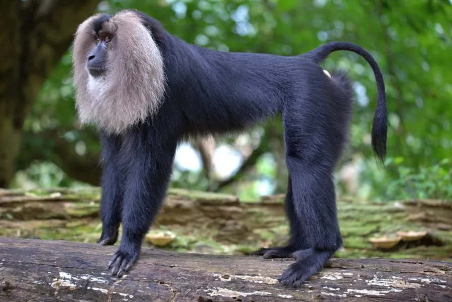

哺乳动物 · 动物界
狮尾猴 Macaca silenus

印度西高止山特有的猕猴，通体乌黑、面部围一圈灰白鬃毛，尾端有一撮蓬松毛簇，状如狮尾，是分布区最狭窄的猕猴之一。
- 分类
- 门脊索动物门纲哺乳纲目灵长目科猴科属猕猴属
- 栖息环境
- 印度西高止山海拔 600–1200 米的热带常绿雨林树冠层
- 地理分布
- 印度喀拉拉邦、卡纳塔克邦与泰米尔纳德邦交界的西高止山区
- 保护级别
- IUCN 濒危（EN）；CITES 附录Ⅰ
物种志
狮尾猴全身毛被乌黑发亮，面部裸皮黑色，两颊与下巴围着一圈灰白色长毛，像戴了银色络腮胡；尾细长，末端有一撮蓬松的黑色毛簇，酷似狮子的尾巴，故得名。成年雄性体长约 50–60 厘米，体重 6–10 千克，雌性体形略小，体重约 3–6 千克，雌雄差异在猕猴中较为明显。
它们仅生活在印度西高止山脉的热带常绿雨林，主要占据海拔 600–1200 米的多雨林冠层，几乎不离开树冠。猴群由一只雄性、数只雌性及其幼仔组成，清晨与傍晚在树冠上层觅食果实、种子、嫩叶、花蜜和昆虫，夜间集体挤在树杈上休息。群体领域意识强，不同群相遇时会用响亮的“呼—呜”声互相宣示。由于雨林被茶园和水库分割，其种群被切成数十个孤立小群，遗传多样性持续下降。
形态与习性
- 体长雄性约 50–60 cm，雌性约 40–50 cm
- 体重雄性约 6–10 kg，雌性约 3–6 kg
- 食性果实、种子、嫩叶、花蜜、树皮与昆虫
- 繁殖孕期约 6 个月，每胎一仔，幼猴由多只雌猴共同照看
- 寿命约 20–30 年
- 分布区面积实际栖息地不足 4000 平方千米，被分割成数十个孤立片断
- 种群现状全球野生个体约 3000–4000 只，仍在缓慢减少
趣味知识
- 狮尾猴尾端有一撮蓬松黑毛，行走时像举着一把小掸子。
- 它们是猕猴中分布最狭窄的种类之一，只在西高止山的一片雨林中活动。
- 猴群清晨会齐声发出长而响亮的高音，被称为雨林里的“晨号”。